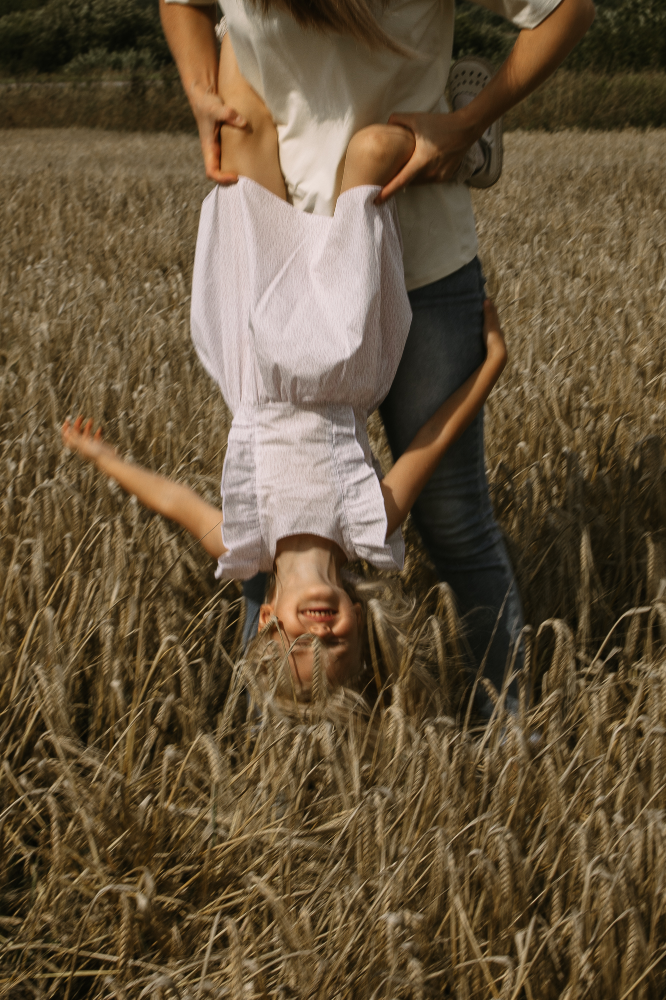

покупателям
Важная информация о доставке, возврате товаров, уходе за вещами и тем, как правильно делать замеры
Доставка
Доставим в любую точку мира удобным для вас способом.
Санкт-Петербург
СДЭК (срок доставки 2-3 дня)
Доставка до ПВЗ – 290 ₽
Доставка до двери – 390 ₽
Доставка до ПВЗ – 290 ₽
Доставка до двери – 390 ₽
Бесплатный самовывоз
ул. Якорная, г. Санкт-Петербург
*необходимо предварительная запись
Курьерская доставка — от 350₽ (срок доставки 1 день)
*точная стоимость доставки курьером рассчитывается менеджером и зависит от вашей удаленности.
Москва
СДЭК (срок доставки 2-4 дня)
Доставка до ПВЗ – 390₽
Доставка до двери – 550₽
Доставка до ПВЗ – 390₽
Доставка до двери – 550₽
По миру
СДЭК
Доставка до ПВЗ или до двери от 390 ₽
Доставка до ПВЗ или до двери от 390 ₽
*точная стоимость доставки курьером рассчитывается менеджером и зависит от вашей удаленности.


Возврат
-
Вы можете вернуть или заменить изделие в течении 14 дней с момента получения, если:
- — не подошел цвет
- — не подошел размер
-
Список изделий неподлежащих к возврату (принимаются к возврату только при наличии брака):
- — изделия из ясельной группы
- — при заказе изделия не по нашей размерной сетке, а с учетом индивидуальных особенностей клиента
- — при закупке цвета ткани специально под клиента
Возврат и обмен изделия на изделие другого размера возможен если он не был в употреблении и при сохранении его товарного вида и бирок. Для оформления заявки на обмен необходимо связаться с нами в течении 2-х суток с момента получения заказа. Затраты, связанные с обратной доставкой товара, осуществляются за ваш счет.
-
Для обмена и возврата:
- — перейдите по ссылке
- — укажите причину возврата
- — наш менеджер свяжется с вами
Правильный уход за одеждой
способен значительно
продлить жизнь любимых
вещей
способен значительно
продлить жизнь любимых
вещей
— стирать не выше 30 градусов при деликатном режиме;
— перед стиркой изделие вывернуть наизнанку;
— использовать щадящий отжим и сушку;
— не отбеливать;
— гладить в режиме «хлопок» или «деликатный» до 150 градусов.
— перед стиркой изделие вывернуть наизнанку;
— использовать щадящий отжим и сушку;
— не отбеливать;
— гладить в режиме «хлопок» или «деликатный» до 150 градусов.
Допускается скатывание внутреннего ворса, ворсинки могут оставаться на одежде. При каждой последующей стирки, ворс уплотняется (при этом изделие не теряет объёма). Ворс со временем пропадает.
Как
правильно сделать замер

Видео подскажет вам все тонкости при замеры, чтобы результат вас порадовал!